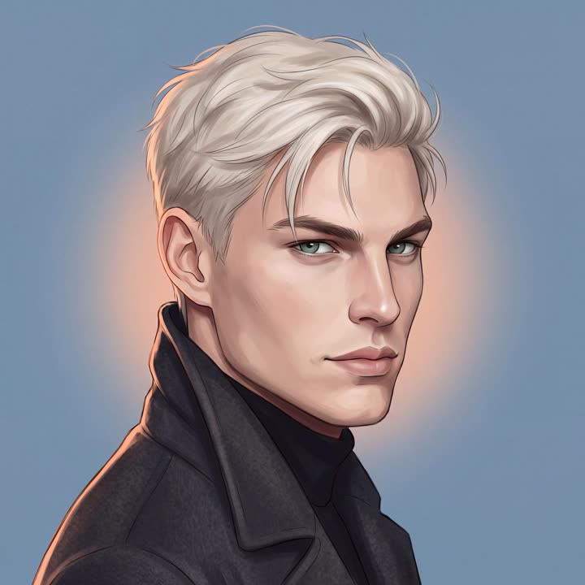

Предзаказ печатной книги
«Осколки первой любви» выходят в печати. Подпишись на канал, чтобы первой узнать, когда откроется предзаказ.
Узнать первой— Будешь играть роль моей девушки.— Что?— Ты. Будешь. Играть. Роль. Моей. Девушки.
Аня переехала в другой город, чтобы сбежать от прошлого, и хотела быть незаметной. Но в первый же день привлекла внимание Артура Холодова — холодного, резкого и опасного.

Здесь можно читать бесплатные книги Екатерины Котляровой целиком и ознакомительные фрагменты новых романов. Без регистрации и без перехода на другие сайты.
«Осколки первой любви» выходят в печати. Подпишись на канал, чтобы первой узнать, когда откроется предзаказ.
Узнать первойТихая Аня, ледяной Артур, солнечный Антон или королева класса Лика? Восемь вопросов, одна минута.
Пройти тестДелай выборы, меняй отношения с Артуром и Ликой и открывай разные концовки. Новая глава каждую неделю.
ИгратьРаскрась Аню, Артура, Антона и Лику прямо в телефоне. С каждой серией — новый кадр.
РаскрашиватьАртур не говорит о чувствах вслух. Он о них поёт. Слушай альбом прямо на сайте.
СлушатьВсе серии по порядку, с первой, — на странице сериала. Смотреть можно прямо здесь, без перехода в ВК.
Екатерина Котлярова
Все книги — на Литнет, новости, серии и кодовые слова для игры — в соцсетях.